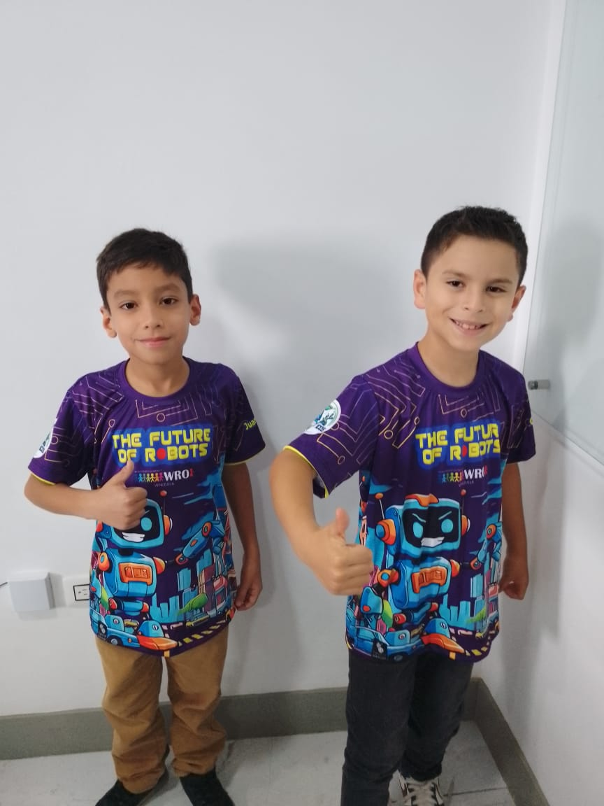

Aprende
Gana
Canjea por Premios
Supera desafios, acumula Pavia
Token

Acerca de Pavia Token y su Integración en la Robótica
Los equipos Pavia, Urbaboticos y Botgasticos han adoptado Pavia Token como una herramienta clave para incentivar la participación, el aprendizaje y la innovación dentro de su club de programación.
A raíz del éxito de este token en sus actividades previas, los equipos han decidido integrarlo en la competencia regional WRO 2025, permitiendo que los asistentes interactúen con robótica y blockchain de manera activa.
🔹 Un sistema de recompensas dinámico: Los visitantes podrán ganar Pavia Tokens al participar en los desafíos del evento.
🔹 Motivación para la próxima generación de programadores: Al experimentar con el token, los jóvenes desarrollarán un mayor interés en tecnologías descentralizadas y su aplicación en robótica.
🔹 Conexión entre educación y tecnología: Esta iniciativa busca acercar conceptos como automatización, programación y blockchain, fomentando el aprendizaje interactivo.
Esta iniciativa no solo impulsa la competencia, sino que también crea un ecosistema educativo y tecnológico, ayudando a que más jóvenes se interesen por el desarrollo de proyectos con impacto real.
Nuestros Equipos en WRO
Equipo Pavia
El equipo Pavia está desarrollando un **robot autónomo capaz de clasificar y transportar objetos** de diferentes tamaños y colores, optimizando procesos logísticos. Su innovación radica en el uso de **visión artificial** para mejorar la precisión y eficiencia en entornos dinámicos.
Interacción con Pavia: ¡Demuestra tu apoyo al Equipo Pavia! Reacciona a su último post en Instagram (@Pavia_Team) con un ❤️ y comenta tu característica favorita de su robot para ganar **5 Pavia Tokens**.
Equipo Urbaboticos
Urbaboticos presenta un proyecto de **automatización de tareas urbanas**, con un robot diseñado para **monitorear la calidad del aire** y recolectar pequeños residuos en espacios públicos. Su enfoque se centra en la sostenibilidad y la mejora del entorno ciudadano.
Interacción con Pavia: ¿Listo para un desafío? Publica un tweet con el hashtag #UrbaboticosPavia mencionando por qué te interesa la robótica y podrías ganar **10 Pavia Tokens**.
Equipo Botgasticos
El equipo Botgasticos está trabajando en un **sistema robótico interactivo para educación**, que permite a los niños aprender conceptos básicos de programación y mecánica de forma lúdica. Su prototipo incluye un robot amigable que guía a los usuarios a través de desafíos educativos.
Interacción con Pavia: ¡Vota por tu demo favorita del Equipo Botgasticos en nuestra encuesta de Telegram y obtén **7 Pavia Tokens** al instante! (Enlace disponible en el evento).
Mapa de Ruta: Activar Pavia Token
Completa los Retos de los Equipos
- ✅ Visita los stands de Botgasticos, Pavia y Urbaboticos y participa en los desafíos que cada equipo ha preparado.
- ✅ Asegúrate de cumplir todas las misiones asignadas para poder avanzar en el proceso de obtención de tokens.
📌 Consejo: Toma fotos y comparte tu experiencia en redes sociales con los hashtags del evento #Pavia #Botgasticos #Urbaboticos #WROBarinas para sumar puntos extra.
Instala tu Ronin Wallet
- ✅ Descarga e instala Ronin Wallet en tu celular o computadora.
- ✅ Crea una cuenta y guarda tu frase de recuperación en un lugar seguro.
📌 Usa el código QR en nuestro stand para descargar la wallet fácilmente.
Configura la Red Ronin Saigon Testnet
- ✅ Abre la wallet y agrega la red Ronin Saigon Testnet siguiendo nuestras instrucciones en la página.
- ✅ Usa el botón de configuración automática en la web para evitar errores manuales.
📌 Si necesitas ayuda, busca a un embajador Pavia Token en el stand.
Envía tu Dirección al Grupo de WhatsApp
- ✅ Copia la dirección de tu wallet y envíala al grupo de WhatsApp designado para recibir los Pavia Tokens.
- ✅ Espera la confirmación de recepción de los tokens en tu wallet.
📌 Si no ves los tokens, revisa que la red esté correctamente configurada.
Busca a un Embajador Pavia Token para Canjear los Tokens
- ✅ Una vez que tengas tus Pavia Tokens en la wallet, busca un embajador Pavia Token en el evento.
- ✅ Canjea tus tokens por premios exclusivos, material educativo, acceso a contenido especial o un NFT conmemorativo.
📌 Los embajadores llevan franelas identificadas con "Pavia Token" para que los encuentres fácilmente.
Preguntas Frecuentes y Soporte
Sabemos que muchos participantes pueden ser nuevos en **blockchain y wallets**, por eso hemos creado esta sección de soporte para ayudarte en cada paso. Si tienes dudas sobre la instalación, configuración o recepción de **Pavia Tokens**, sigue estas instrucciones:
Preguntas Frecuentes (FAQ)
Descarga la extensión de Ronin Wallet para tu navegador (Chrome, Firefox) o la aplicación móvil (iOS, Android). Puedes encontrar el enlace de descarga oficial en la guía rápida de Ronin Wallet aquí.
Una vez instalada Ronin Wallet, abre la aplicación. En la parte superior, busca la opción de red (generalmente dice "Ethereum Mainnet" o "Ronin Mainnet") y cámbiala a **"Ronin Saigon Testnet"**. También puedes usar nuestro en esta página para evitar errores manuales.
Primero, asegúrate de que estás conectado a la red **"Ronin Saigon Testnet"**. Si estás en la red correcta y aún no los ves, verifica tu dirección en el explorador de bloques de Ronin Testnet o contacta al soporte. Es posible que los tokens aún no hayan sido enviados o haya un retraso en la red.
Nuestros embajadores Pavia Token están ubicados en el **Punto de Soporte Pavia Token** en el área central del evento. ¡Son fáciles de identificar! Llevan franelas identificadas con el logo de "Pavia Token".
📌 **Accede a nuestra guía completa aquí**: Guía Detallada Pavia Token
Soporte en Vivo – Grupo de WhatsApp
Si necesitas ayuda **rápida y personalizada**, únete al grupo de **soporte en WhatsApp** donde nuestros embajadores y voluntarios te ayudarán en tiempo real.
- ✔️ Enviar capturas de pantalla si tienes problemas con la instalación.
- ✔️ Preguntar sobre la configuración de Ronin Wallet.
- ✔️ Ver soluciones a los errores más comunes.
Punto de Soporte en el Evento
Si prefieres asistencia presencial, busca nuestro Punto de Soporte Pavia Token en el evento. Nuestro equipo estará listo para ayudarte con la instalación y configuración de la wallet.
📍 Ubicación: Embajador o Coach.
👤 Embajadores identificados con franelas de Pavia Token estarán disponibles para ayudar a los participantes.